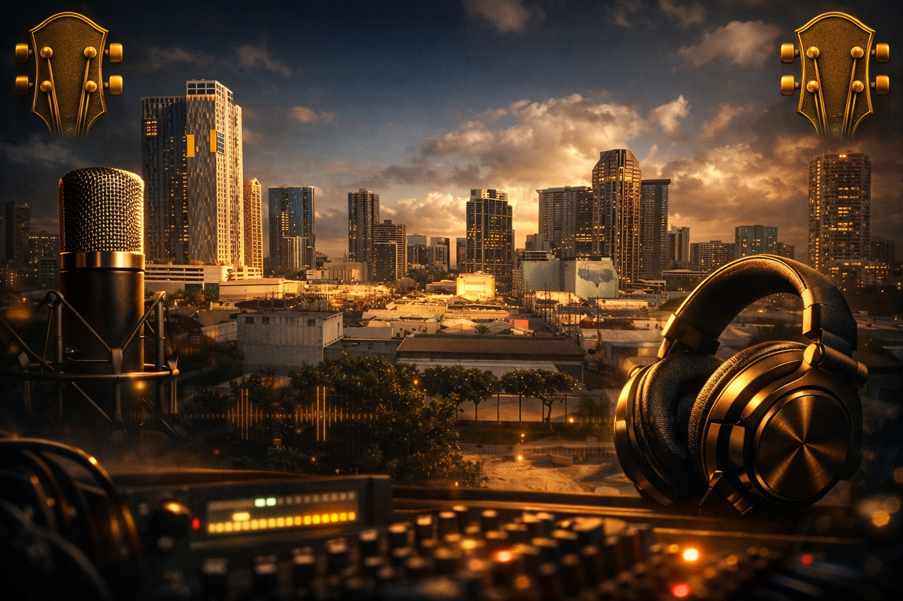

Watson Recording Studio
Where sound becomes emotion, and emotion becomes music.
Welcome to Watson Recording Studio
Watson Recording Studio is a creative space built on intention, emotion, and precision.
Every sound that enters this room is shaped with care — from the warmth of analog gear
to the clarity of modern digital tools. This is where ideas become songs, and songs
become stories.
The studio was designed to feel both inspiring and focused. A place where artists can
breathe, experiment, and push their sound forward without distraction. Whether you're
tracking vocals, building beats, layering guitars, or exploring new textures, the room
adapts to your workflow and elevates your creativity.
At its core, Watson Recording Studio is about connection — between artist and engineer,
between emotion and sound, between vision and reality. This is more than a recording
space. It's a home for ideas, a workshop for craft, and a destination for anyone who
wants their music to feel alive.
Studio Gear Overview
Watson Recording Studio blends classic analog character with modern digital precision.
Below is a selection of the instruments, amps, and tools that shape the sound and the
future vision of this room.
Guitars
- Gibson Les Paul Standard — Thick, warm, sustaining tone for rock leads and heavy rhythm.
- Fender Stratocaster — Bright, clean, and versatile for funk, indie, and ambient textures.
Amps
- Fender Twin Reverb — Legendary clean tube tone, perfect platform for pedals and ambient sounds.
- Marshall JCM800 — Classic rock and metal amp with aggressive, punchy distortion.
Bass
- Fender Precision Bass — Warm, round low end that sits perfectly in any mix.
- Music Man StingRay — Bright, punchy active bass that cuts through dense arrangements.
Drums
- DW Collector’s Series — High‑end acoustic kit with punchy, studio‑ready tone.
- Roland V‑Drums TD‑27KV — Versatile electronic kit for quiet tracking and MIDI production.
Keyboards
- Yamaha Motif XF — Workstation with realistic pianos, strings, and bread‑and‑butter sounds.
- Korg Kronos — Deep workstation ideal for cinematic scoring and complex sound design.
Synthesizers
- Roland Juno‑106 — Classic analog pads, chorus‑soaked leads, and retro 80s textures.
- Sequential Prophet‑6 — Big, emotional analog sound for pads, basses, and epic leads.
Plugins
- FabFilter Pro‑Q 3 — Clean, surgical EQ for precise tone‑shaping in mixing and mastering.
- Waves CLA‑76 — Classic 1176‑style compressor for punchy vocals, drums, and guitars.
Pedals & Effects
- Strymon BigSky — Lush, cinematic reverbs for guitars, synths, and ambient soundscapes.
- Boss DD‑500 — Versatile digital delay for rhythmic echoes and spacious textures.